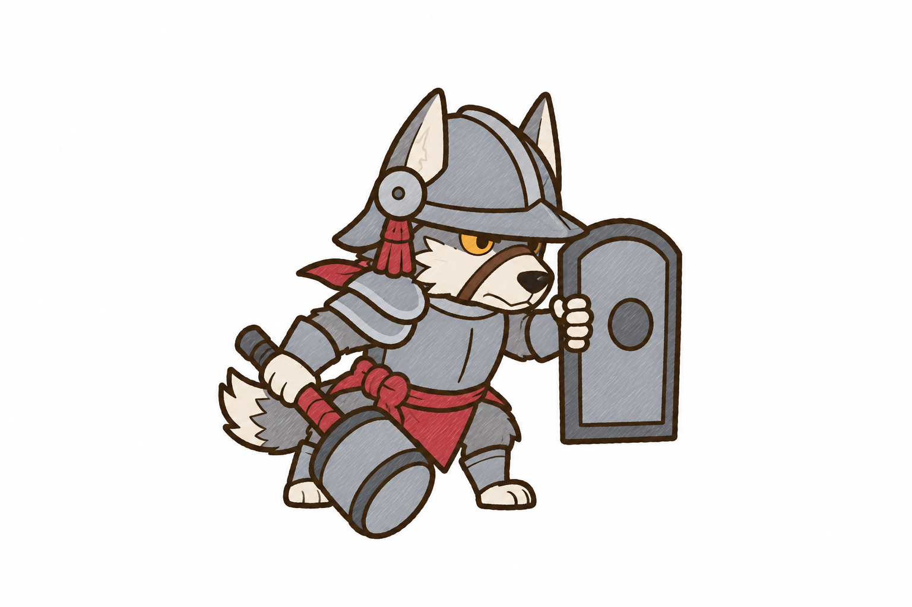

Cùng xương, lưới, clip của monster_3428; đổi tỉ lệ ngay trên rig cho ra chibi (đầu to, thân + tay chân ngắn lại, khiên búa nhỏ hơn) rồi gen da mới (sói con, ít giáp, màu nhạt hơn). Ba đòn tấn công dùng lại động tác vừa duyệt, nhẹ hơn. Tiến hóa nối liền dễ (cùng xương). Nhược: dáng ngồi thụp cơ bắp của con lớn, phóng đầu thì vẫn hơi "người lớn đầu to".

Con chibi thật, có sẵn 10 clip riêng (đứng, chạy, vung búa ném búa, giơ khiên, đỡ, chết). Ba đòn tấn công dựng lại trên rig này theo cùng mô tả (lao gõ búa, ném búa, che khiên lao húc). Tiến hóa gộp hai rig (như Thiết Vệ dạng 1 → 2). Nhiều việc hơn cách 1.